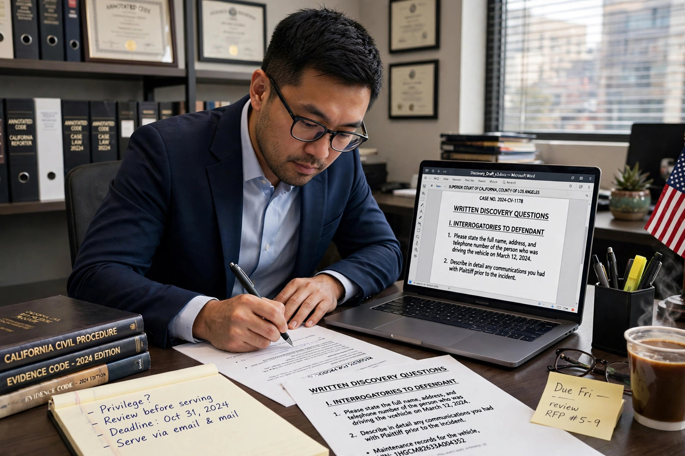

Interrogatories (also known as requests for further information) are a formal set of written questions propounded by one litigant and required to be answered by an adversary in order to clarify matters of fact and help determine in advance what facts will be presented at trial. In U.S. federal court they are governed by Rule 33 of the Federal Rules of Civil Procedure.

A party may serve no more than 25 written interrogatories, including discrete subparts, unless the court permits more. Answers are due within 30 days, must be made under oath, and must be supplemented if later information changes them (Rule 26(e)). Objections must be stated with specificity. Contention interrogatories — asking a party to state facts supporting its claims or an affirmative defense — are permitted, though answers may be deferred until discovery is substantially complete.
Interrogatories are cheaper than depositions and useful for basic facts, identification of witnesses and documents, and damages calculations, but answers are often carefully drafted by counsel and less spontaneous. They are used alongside requests for production of documents and electronically stored information.